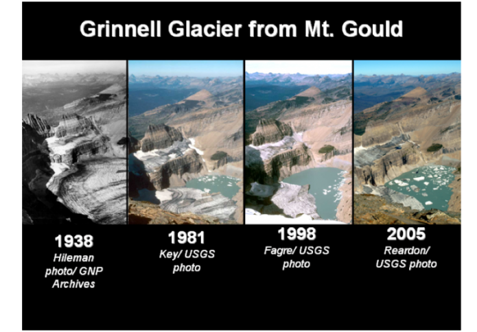

Understanding Glaciers
What are Glaciers?
Glaciers are massive, slow-moving bodies of dense ice formed from compacted snow. They store 68% of the world's freshwater, regulate sea levels, reflect sunlight, and support ecosystems. As climate indicators, their melting impacts freshwater availability, sea levels, and global temperatures, highlighting their significant environmental influence.


Sources:
NSIDC Glacier Mass Balance